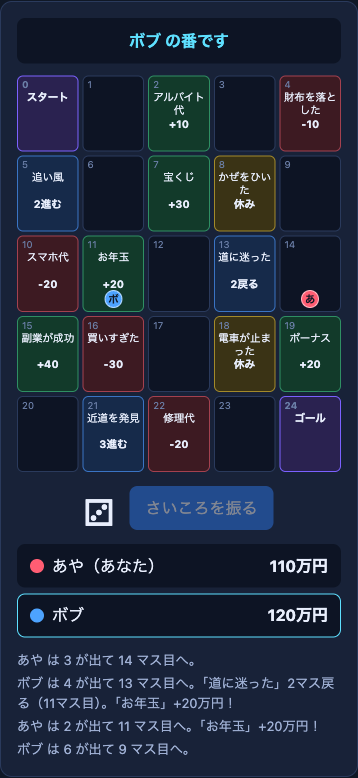
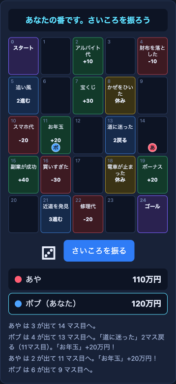
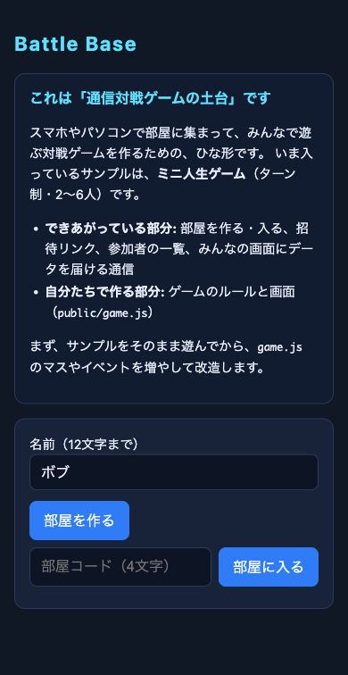
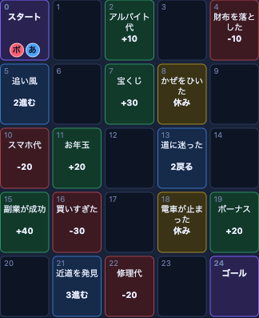
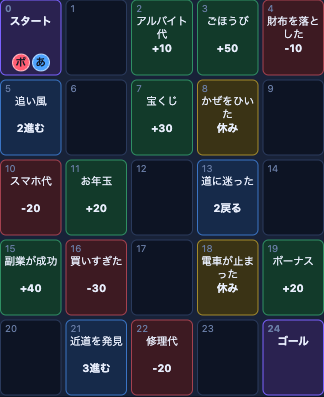

この回のゴール
- 前日の気づきを共有し、agyに頼む「型」（小さく頼む→確認する→直す）を思い出す
- 通信対戦が動くしくみ（ブラウザ・サーバー・部屋・メッセージの中継）を、図を見ながら説明できる
- チームで方向性（見本ゲームのアップデート／進級制作への応用／新しい対戦ゲーム）を選び、最初の制作に入る
- 動く状態を確かめ、安全面（Public・個人情報・APIキー）を確認して、変更を記録して片付ける
今日の流れ
- しくみを知る通信対戦は、なぜ動くのか（図解）
- 方向性を選ぶチームで、3つから1つ決める
- 最初の制作選んだ方向性で、動くところまで
- 確認して記録安全を確かめ、GitHubに残す
授業の流れ
2コマ連続（90分 + 90分 = 計180分）。途中休憩あり。
前日をふりかえり、通信対戦のしくみを知る
前日の気づきを共有する（約5分）
- チームで、昨日のメモ（うまくいったこと・つまずいたこと）を見せ合う。今日やりたいことも、1つだけ出す
- 気づきは、アンケートの声も含めて、先生が口頭で共有する
agyに頼む「型」を思い出す（約5分）
agyに頼む「型」
- 1. 小さく頼む1回に1つの変更。「全部作り直して」は避ける
- 2. 動かして確認する確認する人が、画面を見て確かめる
- 3. 状況をそのまま伝えるうまくいかないときは、何を押して何が出たかを、agyに伝える
/usage、モデルの切り替えは /model（Day1と同じ）。無料枠は週単位で回復し、複雑な指示ほど多く消費します。通信対戦のしくみを知る（約30分）
Day1のCYBER TETRISも、これから使うBattle Baseも、同じしくみで動いています。まず全体像、次に「どうやって届くのか」を、図で見ていきます。
① 登場するもの：ブラウザ、インターネット、サーバー
通信対戦の全体像
npm start で動いている server.js のことです。② 2種類の通信：手紙と電話
画面をもらう通信と、対戦中の通信は、別のもの
-
✉️ 手紙：HTTP（画面をもらう）
URLを開いたときに行う。ブラウザが「画面のファイルをください」と頼み、サーバーが画面（HTML・JavaScript・CSS）を返す。頼む→返す、で1回のやり取りが終わる（ファイルの数だけ繰り返す）。
-
📞 電話：WebSocket（対戦中の通信）
画面が届いたあと、ブラウザが同じ入口にもう一度つなぎに行き、「つなぎっぱなしの線にしてください」と頼む。できた線で、どちらからでも、いつでもメッセージを送れる。
なぜ電話が必要か：手紙（HTTP）は、ブラウザが頼んだときにだけ返事が来る方式です。サーバーのほうから「今、相手がさいころを振ったよ」と先に知らせるのは苦手で、何度も聞きに行く工夫が必要になり、遅れや無駄が出ます。つなぎっぱなしの線（WebSocket）なら、サーバーから先に知らせられます。これが、対戦の相手の動きがすぐ画面に出る理由です。
③ 部屋のしくみ：同じ部屋の人にだけ届く
サーバーの中には「部屋」がある
npm start をやり直す）と、部屋は消えます。また、30分間、動き（入室・開始・メッセージ）がない部屋は、サーバーが閉じます。④ 1手の流れ：「3が出た」が全員に届くまで
ターン制ゲームで、1回さいころを振ったとき
この「3が出た」を送るコードは、ゲームの中身（public/game.js）に、実際にこう書かれています。
ctx.send({ kind: 'roll', value });// value はさいころの目（例: 3）// 自分以外の全員に送る ctx.onMessage(({ from, payload }) => { // 届いたら、同じ計算をする});
⑤ 実際の画面で見る：同じ盤面が2台に出る
Battle Baseのサンプル（ミニ人生ゲーム）を、あやとボブの2台で見たところ

「ボブの番です」

「あなたの番です」
⑥ ゲームの種類で、送る回数が変わる
ターン制とリアルタイム：送る回数がちがう
⑦ どのファイルが、どの役目か
Battle Baseのファイルと、図の対応
-
server.js（サーバー）
部屋を作る・入れる、メッセージの中継。受け取る1通の大きさ（64KB）と、1秒あたりの回数（100通）に上限がある。
-
net.js（電話の線）
ブラウザからサーバーにつなぎっぱなしの線を開き、送る・受け取るを担当する。ふだんは触らない。
-
main.js（ロビー）
部屋を作る・入る、参加者の一覧、ゲーム開始。ふだんは触らない。
-
game.js（ゲームの中身）★
自分たちで作る部分。ルール、画面、「何を送るか」を書く。ここだけを書き換えれば、別のゲームになる。
理解度チェック（自分で確かめる）
回答はこのページの中で判定されるだけで、どこにも送信・保存されず、成績にも含まれない。何度でも試せる。
Q1このゲームで、サーバーがしていることとして、正しいものはどれか。
サーバーは、メッセージの中身を見ずに、同じ部屋の他の人へ中継します。ルールの判定や、画面を描くことは、各自のブラウザ（game.js）が行います。
Q2あやがさいころで3を出した。ボブの画面でも、あやのコマが3マス進むのはなぜか。
送るのは「3が出た」という小さな知らせだけです。全員の画面が同じルールで同じ計算をするので、同じ盤面になります。
Q3部屋RJ7Fの人が送ったメッセージは、別の部屋K3QMの人に届くか。
メッセージは、同じ部屋の人にだけ中継されます。部屋コードで、どの部屋に入るかが決まります。
server.js を説明してもらうと、図とコードがつながります（Codespacesを再開する手順は、次の「方向性①」と同じ）。
server.js を読んで、部屋の作り方と、メッセージを同じ部屋の人に中継するしくみを、プログラミングを学び始めた人にも分かる言葉で説明してください。
チームで方向性を選び、最初の制作に入る
方向性を選ぶ（約10分）
Day1の選択は仮のものでよい。あらためて、チームで1つ決める。迷ったら、「Day1で触った見本ゲームのアップデート」から始めてよい。
3つの方向性（今日やること）
① 見本ゲームのアップデート
Day1のCYBER TETRISを、agyで小さく改造する
- 今日Codespacesを再開し、色・効果音・操作などを1つ変える
② 進級制作に活かす
今回のやり方を、進級制作で使えるか考える
- 今日使えそうな仕組みを洗い出し、Day3の「小さなデモ」を1つ決める
③ 新しい対戦ゲーム
余力のあるチーム向け。まず人生ゲーム（ターン制）
- 今日Battle BaseをForkして遊び、マスを1つ増やす
最初の制作（約40分）：選んだ方向性のところだけ進める
方向性① 見本ゲームのアップデート
- 代表者: 見本ゲームのCodespacesを再開するgithub.com/codespaces を開き、見本ゲーム（Tetris）のCodespacesを選んで開く。停止中のものは、開くと再開される。「Create」ではなく、同じCodespacesを再開する（Day1で作ったもの）。
- 代表者: サーバーを動かし、ポートを確認するターミナルで
npm startを入力する。再開したあとは、動かし直しが必要。「ポート」タブの8000番の表示範囲がPublicのままか確認し、Privateに戻っていたら、右クリック→「ポートの表示範囲」→「Public」にする。 - 代表者: agyを起動する新しいターミナル（右上の「＋」）で
agyと入力する。再度ログインを求められる場合がある（手順はDay1の「Antigravity CLI（agy）を導入して認証する」と同じ）。 - 入力する人: 小さな指示を1つ出す下の指示文を、agyに入力する。
ブロックの色を青系にしてください。
- 確認する人: 画面で確かめるブラウザを再読み込みして、色が変わったかを見る。再読み込みすると部屋から抜けるので、新しい部屋を作り直して確かめる。変わらないときは、何を見て何が起きたかをagyに伝える。
方向性② 今回の体験を進級制作に活かす
- チーム: 進級制作の「今のしくみ」を3行で書く何を作っているか／どんな画面か／どこで動いているか。
- チーム: 今回の仕組みが使えるかを、表で洗い出す下の表を、Googleドキュメントなどのメモにコピーして貼り、○△×と理由を書く。
- チーム: Day3に作る「小さなデモ」を1つ決める表の中から、いちばん小さく作れそうなものを選び、1行で書く（例:「agyへの小さな指示で、進級制作のリポジトリに、機能を1つ足す」）。
| 今回使った仕組み | 進級制作で使えそう？（○△×） | 理由・使い方の案 |
|---|---|---|
| Fork（他のリポジトリをコピーして始める） | ||
| Codespaces（ブラウザで開く開発環境） | ||
| agyへの小さな指示（作りながら直す） | ||
| ポート転送（Public）で、スマホや他の人に見せる | ||
| 対戦の通信（部屋・メッセージの中継） |
| 今回使った仕組み | 進級制作で使えそう？（○△×） | 理由・使い方の案 | |---|---|---| | Fork（他のリポジトリをコピーして始める） | | | | Codespaces（ブラウザで開く開発環境） | | | | agyへの小さな指示（作りながら直す） | | | | ポート転送（Public）で、スマホや他の人に見せる | | | | 対戦の通信（部屋・メッセージの中継） | | |
方向性③ 新しい対戦ゲーム（Battle Baseで人生ゲーム）
担当教員が用意したBattle Base（対戦ゲームの土台）を使う。通信の部分はできあがっていて、サンプルのミニ人生ゲームが最初から動く。ゲームのルールを書く場所は public/game.js だけ。
- 代表者: Battle BaseをForkする下のURLを開き、右上の「Fork」→「Create fork」をクリックする（Day1と同じ手順）。Forkしたあと、Day1と同じように、Forkにもメンバーを招待する（「Settings」→「Collaborators」→「Add people」）。
https://github.com/yasushi-honda/battle-base
- 代表者: ForkからCodespacesを作るForkしたリポジトリで、「Code」→「Codespaces」→「＋」。新しいCodespacesなので、Day1の見本ゲームと同じく、agyは入っていない。入れる手順は、このあとの「agyを入れる」の枠のとおり（遊んだあと、改造の前に入れる）。
- 代表者: サーバーを動かすターミナルで次を入力する。「Battle Base Server running on http://localhost:8000」と表示されれば成功。このターミナルは、遊んでいる間ずっと使う。部屋を作る・入る・ゲームを始めるたびに、このターミナルに1行ずつ記録が出る（サーバーが部屋を管理している様子が見える）。
npm start
- 代表者: 「ポート」タブで、8000番をPublicにする8000番を右クリック→「ポートの表示範囲」→「Public」（英語表示は「Port Visibility」）。設定ファイルでは、最初からPublicにはできない。
- チーム全員: 画面を開いて、部屋に入る8000番の行の地球儀アイコンで開く。最初に出るGitHubの注意画面（英語で「You are about to access a development port served by someone's codespace」）は、自分たちのリンクなら、緑の「Continue」ボタンを押して進む。名前を入れて、代表者が「部屋を作る」→「招待リンクをコピー」で、チームに送る。2人以上そろったら、ホストが「ゲームを始める」を押す。名前は、本名ではなく、ニックネームにする。
最初に開く画面（ロビー）

- チーム: サンプルのミニ人生ゲームを遊ぶ順番にさいころを振り、お金が増えるマス（緑）・減るマス（赤）・1回休み（黄）・進む／戻る（青）を体験する。ゴールすると、着順に応じたボーナス（1着 +50万円、2着 +30万円、3着 +10万円）がもらえる。全員がゴールすると終わり。着順ではなく、お金がいちばん多い人の勝ち。1人しかいないときは、別のブラウザのタブ（シークレットウィンドウ）で、自分の招待リンクを開くと、2人目として入れる。
- （任意）チームで1人、スマホからも入ってみる招待リンクを、自分のスマホに送って開く。注意画面で「Continue」を押す。別の端末・別の回線から、同じ部屋に入れることが、実感できる。学校のWi-Fiでも、スマホの回線でもよい（回線のデータ通信量は、自分で気をつける）。
agyを入れる（Battle BaseのCodespacesで、使うとき）：新しいターミナル（右上の「＋」）で、次を入力する。入れたら、agy と入力して起動する。認証の手順は、Day1の「Antigravity CLI（agy）を導入して認証する」と同じ。
curl -fsSL https://antigravity.google/cli/install.sh | bash
改造してみる：マスを1つ変える
ゲームの盤面は、public/game.js の BOARD に、マスの並びとして書いてある。1行を変えると、盤面が変わる。マスの番号は、スタートが0番（画面の左上の小さい数字と同じ）。
plus('アルバイト代', 10), // 2 plus('ごほうび', 50), // 3 ← 変えた行 minus('財布を落とした', 10), // 4
番号3のマスは、もとは normal()（何も起きないマス）だった。plus('ごほうび', 50) は、「ごほうび」という名前の、お金が50万円増えるマスを表す。
BOARDを1行変えたら、盤面が変わった

番号3のマスは、何も起きない

番号3のマスが「ごほうび +50」
agyに頼むときは、次のように、小さく、1つだけ、マスの番号を決めて頼む。画面の再読み込みで反映される（game.js を変えたときは、npm start のやり直しは不要。server.js を変えたときだけ、やり直す）。再読み込みすると部屋から抜け、ゲームが始まった部屋には戻れないので、全員が再読み込みして、新しい部屋を作り直して確かめる。
public/game.js の BOARD の、番号3（スタートが0番）のマスを、お金が50万円増える「ごほうび」のマスに変えてください。
小さな指示で、少しずつ育てる
1限の続きを、チームのペースで進める。1回に1つの変更を、「頼む→動かす→確かめる」で繰り返す。
方向性ごとの、次の小さな一歩（例）
-
① 見本ゲームのアップデート
効果音を変える、背景色を変える、ゲームオーバーのメッセージを変える、など。1つ変えるたびに、確認する人が画面で確かめる。
-
② 進級制作に活かす
選んだ「小さなデモ」を、2〜3行の手順に分ける。Day3に、agyへ頼む順番を決める。進級制作の課題を、AIの力で解決するワークに充ててもよい。
-
③ 新しい対戦ゲーム
マスを増やす・イベントを新しくする、最初のお金を変える、などから1つ。慣れたら、新しい種類のマス（例: 全員から5万円もらう）を、agyと一緒に作る。
public/game.js のマスの種類に、「全員から5万円もらう」マスを足してください。BOARD にも、このマスを1つ置いてください。
困ったときの確認表（2年次が中心になって、切り分ける）
-
「ポート」タブに8000番が出ない
ターミナルで
npm startが動いているか。動いていなければ、もう一度入力する。 -
画面が開けない・接続できない
8000番の表示範囲がPublicか。注意画面が出ていたら、「Continue」を押したか。
-
遊んでいる途中で、急に接続が切れた
Codespacesは、キーボード・マウスの操作も、ターミナルの出力もない状態が、既定で30分続くと止まる（公式）。見本ゲーム（Tetris）は、遊ぶだけでは「操作あり」にならない。Battle Baseは、遊んでいる間、1分ごとの記録がターミナルに出るので、止まりにくい。ただし、自動で止まることを当てにしない（操作や出力が続いても、最大12時間で止まる）。使い終わったら、必ず自分で停止する。止まってしまったときは、github.com/codespaces でCodespacesを再開し、
npm startをやり直して、部屋を作り直す。 -
「部屋が見つかりません」と出る
コードの打ち間違いか。サーバーを止める・やり直すと部屋が消え、30分間動きのない部屋も閉じられるので、部屋を作り直す。
-
変えたのに、画面が変わらない
ブラウザを再読み込みしたか。
server.jsを変えたときは、npm startを止めて（Ctrl+C）、もう一度入力する。 -
agyが反応しない・枠がなくなった
再認証が必要な場合がある（Day1の手順）。
/usageで残りを見て、/modelで別のモデルに切り替える。それでも進めないときは、交代要員（Day1）へ。 -
うまく動かない原因が分からない
何を押して、何が表示されたかを、そのままagyに伝える。画面のエラー表示は、読まずにコピーして貼るだけでもよい。
動くことを確かめ、安全を確認して、変更を記録する
動作を確認する（約10分）
- 今日変えたところが、動いていることを、チーム全員の前で確認する（変えていないチームは、通信が動くところまで）
- （任意）隣のチームと、画面を見せ合う。「何を変えたか」と「agyにどう頼んだか」を、1分ずつ話す。見せるだけで、発表資料は不要
安全を確認する（約10分）
- Publicのままにしていないか使い終わったら、ポートの公開をやめるか、サーバーを止める。URLを知っている人は、誰でも開ける。
- 個人情報を、画面や名前に入れていないか本名・住所・電話番号などは、入力しない・映さない。名前は、ニックネームにする。
- APIキーやパスワードを、ファイルに書いていないかリポジトリがPublicのものは、コミットすると誰でも見られる。
- 進級制作のコードを、持ち込んでいないか方向性②のチームは、今日は洗い出しだけで、進級制作のコードを、このCodespacesや公開ポートに載せない。
変更をGitHubに記録する（約10分）
- コードを変えたチームは、変更をGitHubに記録する。プッシュしないと、Codespacesの中にしか残りません。交代要員が引き継ぐためにも必要
- 記録先は、①見本ゲームのアップデートは自分のFork（Tetris）、③新しい対戦ゲームはBattle BaseのFork。②進級制作に活かすチームは、洗い出したメモが残っていればよい
ここまでの変更をコミットして、GitHubにプッシュしてください。
アンケートに答える／片付ける
アンケートに答える（Googleフォーム、約3分）
- フォームは、この講座のGoogle Classroomの専用ルームで共有される。Classroomを開いて、今日のアンケートを探して答える
片付けチェック（全員で確認）
- 変更があれば、プッシュしたコードを変えたチームだけ。GitHubで、今日のファイルが見えることを確認する。
- ポートの公開をやめた（またはサーバーを止めた）Publicのままにしない。
- Codespacesを停止した見本ゲーム用・Battle Base用・Day1のチーム用、すべて github.com/codespaces で停止済みか確認する。
次回予告
- Day3：チームで、挑戦するか続きかを決める。余力のあるチームは、ボンバーマン（6人同時の対戦）に挑戦する。そのほかのチームは、Day2の続きを進める。公開するチームは、パブリック公開の確認と、パスコード以外の対策を1つ入れる
- 今日うまくいったこと・つまずいたことを、簡単にメモしておく
課題・次回までにやること
変更したチームの代表者は、リポジトリ（①は自分のFork、③はBattle BaseのFork）をGitHub上で開き、今日作ったファイルが反映されているか確認する。Codespacesは停止したままでよい（次回は「Create」ではなく、同じCodespacesを再開する）。
次回の冒頭で、前日の気づき・トラブルを共有します。簡単なメモで十分です。
「ブラウザ」「サーバー」「部屋」「メッセージの中継」という言葉を使う。隣の人に話してみるとよい。
参考リンク
- Battle Base（対戦ゲームの土台） — 担当教員作成。READMEに、使い方・サンプルのルール・改造の例がある
- CYBER TETRIS（見本ゲーム） — Day1の見本ゲーム
- WebSocket API (WebSockets)（MDN） — WebSocketの仕組みの解説
- Forwarding ports in your codespace（公式） — ポート転送とPublic設定
- Security in GitHub Codespaces（公式） — 公開ポートのセキュリティ
- Setting your timeout period for GitHub Codespaces（公式） — 操作がないと止まる時間（既定30分）
- Stopping and starting a codespace（公式） — 停止と再開の手順
- GitHub Codespaces billing（公式） — 無料枠と、使い切った場合の挙動